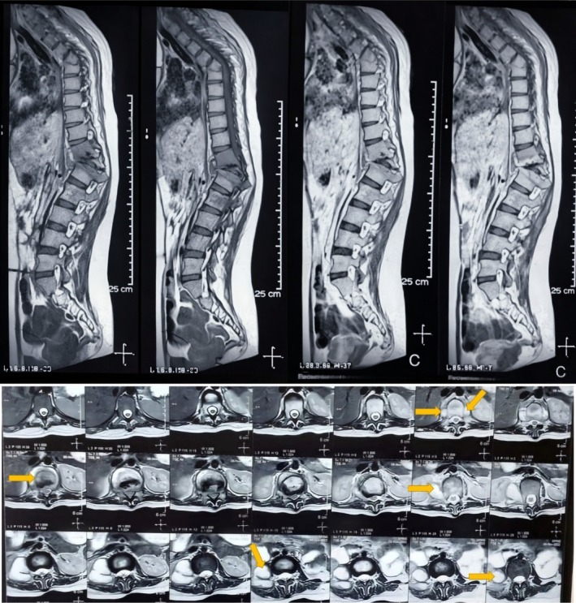
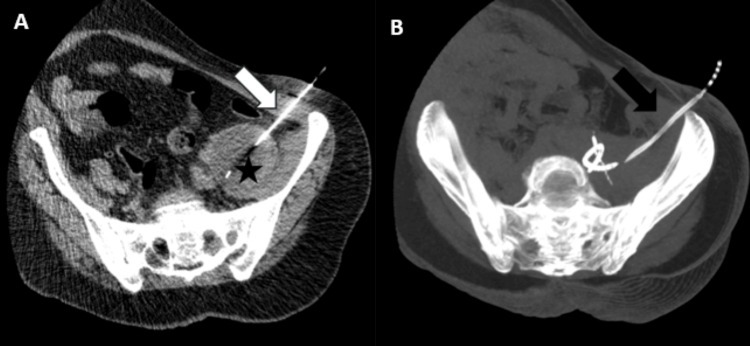
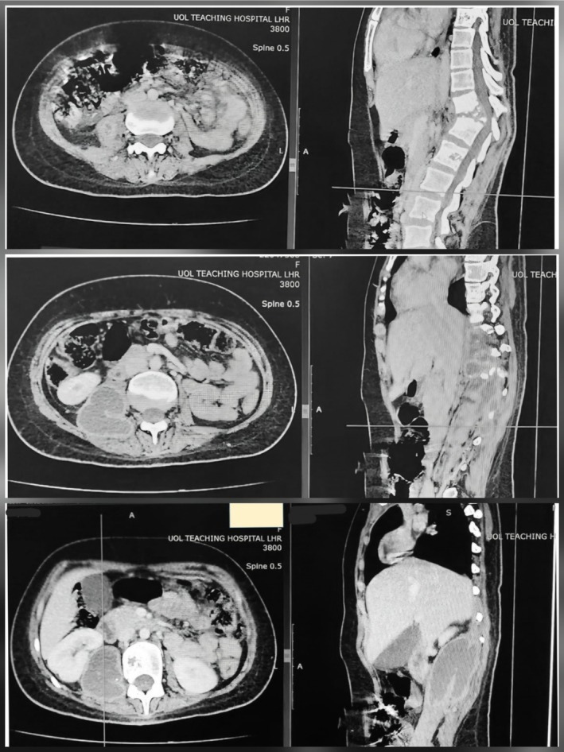
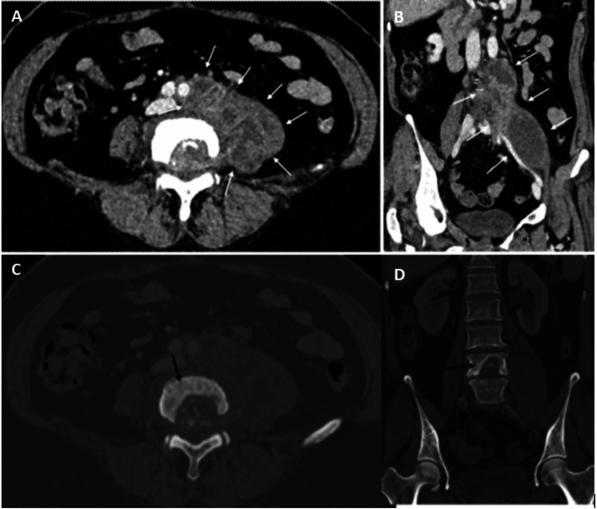

3109 — Lao cột sống (Pott) với áp-xe cơ chậu lạnh ở trẻ / Tuberculous spondylitis with cold psoas abscess
Tags: pattern:ap-xe pattern:ap-xe-lanh pattern:hoai-tu-xuong pattern:phu-tuy-xuong pattern:mat-duong-vien-co-chau pattern:gibbus vung:cot-song vung:co-chau vung:sau-phuc-mac protocol:MRI-cot-song protocol:CT-co-xuong protocol:PCR-lao
Mức chắc chắn (certainty): tổng hợp y văn (literature synthesis) — số liệu chính từ tổng quan hệ thống 64 ca Pott ở trẻ 0–17 tuổi (PMC13610089), loạt 37 trẻ lao cột sống (PMC3031051), nghiên cứu 100 ca lao cột sống theo dõi bằng MRI (PMC12720259), loạt 28 trẻ áp-xe cơ chậu 20 năm (PMC13621494, chỉ dùng số liệu nền) và các ca có ảnh CC BY (PMC12928113, PMC12720216, PMC12822259). Bài không lặp lại phần áp-xe cơ chậu chung (bài 3081) mà tập trung vào thể lao — khác tác nhân, khác thời gian điều trị, khác ngưỡng mổ.
Câu chốt: áp-xe cơ chậu ở trẻ có thể là dấu hiệu ĐẦU TIÊN của lao cột sống, và thể lao khác vi khuẩn thường ở bốn điểm quyết định: (1) bệnh cảnh "lạnh" — không sốt hoặc sốt nhẹ, không nóng đỏ, nhưng đau lưng/đi khập khiễng kéo dài hàng tháng (trễ chẩn đoán trung bình 141,4 ngày); (2) hình ảnh hủy thân sống + áp-xe cạnh sống/cơ chậu RẤT lớn so với mức hủy xương, đĩa đệm còn tương đối ở giai đoạn sớm; (3) chẩn đoán vi sinh bằng GeneXpert/PCR trên dịch hút (dương tính 79,3% trong loạt trẻ) — cấy lao chậm 4–8 tuần, không chờ; (4) điều trị ATT 12 tháng (2HRZE/10HR) + dẫn lưu ổ lớn, và tuyệt đối không ngừng thuốc ở tháng 6 chỉ vì trẻ hết đau — MRI chỉ lành hoàn toàn 30% ở tháng 6 nhưng 80% ở tháng 12.
1. Tổng quan bệnh học – cơ chế hình ảnh: TẠI SAO lao "lạnh" và tại sao đĩa đệm không mất sớm
1.1 Dịch tễ và đường lan
- Lao xương khớp chiếm 10–20% lao ngoài phổi; lao cột sống chiếm ~50% lao xương — thể hay gặp nhất ở trẻ và người trẻ (PMC3031051; PMC13610089).
- Đường lan: lan theo máu qua đám rối tĩnh mạch Batson (không có van) và động mạch phân đoạn → tổn thương bắt đầu ở thân sống trước – sát đĩa đệm, lan dưới dây chằng dọc trước/sau (subligamentous spread) sang thân sống kề bên, rồi ra mô cạnh sống. Từ đó mủ đi theo bao cơ chậu (psoas fascia) xuống hố chậu, bẹn, khớp háng — vì thế trẻ có thể đến khám vì khối bẹn/đau háng, không phải đau lưng.
- TẠI SAO gọi là "áp-xe lạnh" (cold abscess): mủ lao ít men tiêu protein và ít phản ứng viêm cấp, nên không nóng, không đỏ, không đau dữ dội, thành ổ dày, xơ, dịch đặc, hoại tử bã đậu (caseous). Vì vậy không có sốt cao không loại trừ lao: trong loạt 28 trẻ áp-xe cơ chậu, sốt chỉ gặp 16,7% ca nguyên phát so với 54,5% ca thứ phát (PMC13621494).
- TẠI SAO trẻ chậm chẩn đoán: đau lưng ở trẻ khó khai thác, hay bị quy cho chấn thương nhẹ, vẹo tư thế, tăng trưởng; trong 64 ca trẻ, trễ chẩn đoán trung bình 141,4 ngày (khoảng 4,7 tháng) (PMC13610089). Loạt 37 trẻ khác ghi trung vị 9 tháng từ lúc có triệu chứng đến lúc nhập viện (PMC3031051).
1.2 Vật lý hình ảnh: vì sao MRI là chìa khóa, X-quang dễ bỏ sót
- X-quang: chỉ thấy khi đã mất 30–50% khoáng chất thân sống → hẹp khe đĩa, lõm thân sống, gù (gibbus), bóng cơ chậu mất hoặc phồng. Trong loạt trẻ, X-quang được dùng 81% nhưng không đủ để chẩn đoán sớm; X-quang bình thường không loại trừ (PMC13610089).
- CT: thấy rõ hủy xương, mảnh xương chết (sequestrum), vôi hóa trong ổ mủ, và ổ dịch cạnh sống/cơ chậu 0–20 HU có viền ngấm thuốc; là đường dẫn sinh thiết/dẫn lưu. Nhưng CT kém nhạy với phù tủy xương và lan ngoài màng cứng.
- MRI (chuỗi xung chuẩn): T1W giảm tín hiệu (thay tủy mỡ bằng mô viêm/dịch), T2W/STIR tăng tín hiệu ở thân sống + đĩa đệm + mô cạnh sống; ổ mủ T2 rất sáng (nước tự do), viền ngấm thuốc sau tiêm; DWI hạn chế khuếch tán (sáng DWI, tối ADC) do dịch nhớt, giàu tế bào. MRI thấy lan ngoài màng cứng, chèn tủy, phù tủy xương, áp-xe cơ chậu — những thứ quyết định có mổ hay không.
- TẠI SAO đĩa đệm còn tương đối ở giai đoạn sớm (khác vi khuẩn thường): vi khuẩn sinh mủ (Staphylococcus) tiết protease phân hủy đĩa nhanh; Mycobacterium tuberculosis không có men này, lan dưới dây chằng và phá xương chậm → hình ảnh kinh điển là hủy thân sống nhiều, hẹp đĩa đệm ít ở giai đoạn đầu, đĩa đệm mất muộn. Đây là điểm phân biệt sống còn trên MRI (mục 3).
- TẠI SAO vôi hóa gặp ở thể mạn: hoại tử bã đậu lâu ngày lắng đọng calci trong ổ mủ xơ → nốt vôi hóa trong áp-xe cạnh sống/cơ chậu; gặp ở thể tiến triển chậm, không phải dấu hiệu đặc hiệu.
1.3 Số liệu định lượng để tư vấn và theo dõi
- 64 ca trẻ (0–17 tuổi, 2000–2025): tuổi trung bình 8,58 (0,7–17), trung vị 10; đau lưng 79,7%, đi lại khó 68,4%, sốt 55%, sụt cân 55,8%; cột sống ngực 60,3%; trễ chẩn đoán trung bình 141,4 ngày; 58% phải mổ (dẫn lưu áp-xe cạnh sống là phổ biến nhất); hồi phục lâm sàng 96,9%; dị cảm 46%, yếu vận động 68,4%, di chứng vận động vĩnh viễn 8,1%, gù tồn tại 14,5% (PMC13610089).
- Hiệu suất xét nghiệm ở trẻ: PCR/GeneXpert 79,3%, cấy lao 76,9%, nhuộm Ziehl–Neelsen 56,5% (PMC13610089). Ở loạt 100 ca người lớn: mô bệnh học 50%, GeneXpert 48%, soi 30%, cấy 28% — cho thấy không xét nghiệm nào một mình đủ, phải kết hợp mô bệnh + PCR + cấy (PMC12720259).
- Thời gian lành trên MRI (100 ca): lành hoàn toàn 30% ở tháng 6, 80% ở tháng 12, hồi phục lâm sàng 89% / huyết học 82% / hình ảnh 88% ở tháng 18 (PMC12720259). Đây là cơ sở để không rút ngắn ATT xuống 6 tháng ở lao cột sống.
- Liều và thời gian (WHO 2025, dùng trong ca trẻ): H 10 – R 15 – Z 35 – E 20 mg/kg/ngày, 2 tháng HRZE + 10 tháng HR = 12 tháng cho thể xương khớp và thần kinh trung ương (PMC13610089). ATS/CDC cũng khuyến cáo tối thiểu 12 tháng cho lao xương khớp (PMC3031051).
2. Mẫu hình + chẩn đoán phân biệt theo vị trí (gamut)
2.1 Theo vị trí tổn thương
- Thân sống trước (điển hình): hủy xương + phù tủy, lan dưới dây chằng sang thân kề; gù khi nhiều tầng.
- Cạnh sống (paravertebral): ổ mủ hình thoi dọc hai bên sống, "tổ chim" trên CT; có thể vôi hóa.
- Cơ chậu (psoas): ổ mủ dọc cơ, lan xuống hố chậu/bẹn; trẻ đau háng, đi khập khiễng, dễ nhầm viêm khớp háng/viêm ruột thừa (PMC12720216).
- Ngoài màng cứng (epidural): chèn tủy → yếu chi, rối loạn cơ vòng; là chỉ định mổ/giải ép.
- Lan vào trung thất/phổi: thể ngực có áp-xe trung thất, khó thở.
- Đa ổ: lao cột sống nhiều tầng (ca PMC12928113: D5–D12), gặp ở trẻ suy dinh dưỡng/BCG kém.
2.2 Gamut phân biệt (theo hình thái và bối cảnh)
| Bệnh cảnh | Điểm giống | Điểm khác cốt lõi |
|---|---|---|
| Viêm đĩa đệm – thân sống do vi khuẩn (pyogenic) | Hủy thân sống, phù tủy, ổ cạnh sống | Sốt cao, khởi phát ngày–tuần, phá đĩa đệm SỚM, ổ mủ nhỏ, không vôi hóa (bài 6163) |
| Brucella spondylitis | Hủy thân sống, đau lưng mạn | Vùng thắt lưng, mọc xương mỏ vẹt (parrot beak), ít phá hủy, tiền sử chăn nuôi/sữa chưa tiệt trùng |
| U hạt bào Langerhans (vertebra plana) | Trẻ, thân sống xẹp phẳng, đau lưng | Không có ổ mủ cạnh sống, đĩa đệm nguyên, xẹp đối xứng như đồng xu |
| Di căn u nguyên bào thần kinh | Trẻ, đau lưng, khối cạnh sống | Khối đặc, vôi hóa thô, tổn thương nhiều xương, không có mủ; catecholamine niệu |
| Áp-xe cơ chậu do vi khuẩn (bài 3081) | Đau háng, đi khập khiễng, ổ dịch trong cơ chậu | Sốt cao hơn, Staphylococcus, không hủy thân sống (trừ khi lan từ sống), đáp ứng kháng sinh thường |
| Viêm khớp háng nhiễm khuẩn | Đau háng, từ chối tì chân | Ổ dịch trong khớp, hẹp khe khớp, không có ổ trong cơ chậu |
| Viêm ruột thừa/áp-xe ruột thừa | Đau bụng dưới phải, sốt nhẹ | Ổ dịch quanh manh tràng, không hủy thân sống; nhưng áp-xe cơ chậu có thể bắt chước viêm ruột thừa (PMC12720216) |
3. Bảng so sánh phân biệt (ma trận đối chiếu)
| Thực thể | Hình ảnh điển hình (MRI/CT) | Chốt vào (rule-in) | Chốt loại (rule-out) | Gợi ý xác nhận |
|---|---|---|---|---|
| Lao cột sống (Pott) trẻ | Hủy thân sống trước, phù tủy lan dưới dây chằng, đĩa đệm còn tương đối, áp-xe cạnh sống/cơ chậu lớn, ± vôi hóa | Áp-xe lớn không tương xứng với hủy xương + tiền sử tiếp xúc/lao phổi + GeneXpert dương | Sốt cao cấp tính + phá đĩa đệm sớm → nghĩ vi khuẩn thường | GeneXpert trên dịch hút/sinh thiết, cấy lao, mô bệnh (u hạt bã đậu) |
| Viêm đĩa đệm – thân sống do vi khuẩn | Hẹp đĩa đệm sớm, phù tủy, ổ mủ nhỏ, ngấm thuốc mạnh, không vôi hóa | Sốt cao + đau cấp + cấy máu/dịch dương tính | Tiến triển chậm hàng tháng + ổ mủ lớn + đĩa đệm còn → nghĩ lao | Cấy máu, cấy dịch đĩa; kháng sinh theo kháng sinh đồ |
| Brucella | Thắt lưng, mọc xương mỏ vẹt, hủy xương ít, đĩa đệm tổn thương muộn | Tiền sử chăn nuôi + huyết thanh Brucella dương | Áp-xe cơ chậu lớn, hủy nhiều tầng → không điển hình Brucella | Huyết thanh học, cấy Brucella |
| U hạt bào Langerhans | Vertebra plana, đĩa đệm nguyên, không ổ mủ | Xẹp phẳng đối xứng một thân sống + không viêm | Có ổ mủ cạnh sống/cơ chậu → không phải LCH đơn thuần | Mô bệnh (tế bào Langerhans, CD1a), PET |
| Áp-xe cơ chậu đơn thuần (bài 3081) | Ổ dịch trong cơ chậu có viền, cơ to, mất dải mỡ | Ổ dịch + cơ chậu to + không hủy xương | Hủy thân sống + đĩa tổn thương → phải tìm lao cột sống | Siêu âm/CT dẫn lưu + cấy; MRI cột sống khi nghi |
| Di căn u nguyên bào thần kinh | Khối đặc cạnh sống, vôi hóa thô, nhiều ổ xương | Khối đặc + catecholamine niệu + tuổi nhỏ | Ổ dịch có viền, không có khối đặc → không phải u | MIBG, catecholamine, sinh thiết |

MRI cột sống ở trẻ bị Pott: hủy thân sống + tổn thương mô mềm cạnh sống, phù hợp lao cột sống. Nguồn: Clin Case Rep 2026 (PMC12928113), CC BY 4.0.4. Protocol chụp + phân tầng điều trị
4.1 Trình tự chẩn đoán (không chờ cấy)
- Bước 1 — X-quang cột sống thẳng/nghiêng: tìm hẹp khe đĩa, lõm thân sống, gù, bóng cơ chậu mất. Bình thường không loại trừ.
- Bước 2 — MRI toàn bộ cột sống có cản quang (T1W, T2W/STIR, T1W fat-sat sau tiêm, ± DWI): xác định số tầng, mức chèn tủy, ổ cạnh sống/cơ chậu, lan ngoài màng cứng. Đây là chuẩn chẩn đoán hình ảnh và là cơ sở theo dõi ATT.
- Bước 3 — CT có cản quang khi cần đánh giá xương chi tiết, vôi hóa, mảnh xương chết, hoặc lập kế hoạch dẫn lưu/sinh thiết.
- Bước 4 — lấy bệnh phẩm (bắt buộc trước khi kết luận): hút dịch ổ cạnh sống/cơ chậu dưới siêu âm hoặc CT → gửi GeneXpert MTB/RIF, cấy lao, nhuộm ZN, mô bệnh học. GeneXpert dương tính 79,3% trong loạt trẻ; cấy lao cần 4–8 tuần — không chờ cấy mới điều trị khi bệnh cảnh điển hình.
- Xét nghiệm kèm: ESR/CRP (theo dõi đáp ứng), HIV, lao phổi (X-quang/CT ngực, GeneXpert đờm/dịch dạ dày), tiếp xúc nguồn lây, đánh giá dinh dưỡng.
4.2 Phân tầng điều trị
- Luôn có: ATT 12 tháng theo WHO 2025 (2HRZE/10HR; liều theo cân nặng ở mục 1.3) + bổ sung pyridoxine khi dùng isoniazid + nẹp/cố định cột sống khi đau nhiều hoặc mất vững + dinh dưỡng.
- Dẫn lưu ổ mủ (không mổ hở): chỉ định khi ổ lớn (≥ 3 cm theo ngưỡng áp-xe cơ chậu bài 3081), ổ chèn ép, đau nhiều, không đáp ứng sau 2–4 tuần, hoặc cần chẩn đoán vi sinh. Dùng pigtail dưới siêu âm/CT — ít xâm lấn, lấy được mủ để GeneXpert.

CT dưới hướng dẫn: (A) kim vào ổ mủ cơ chậu trái; (B) catheter pigtail đã đặt trong ổ (MIP). Mủ lấy được dùng cho GeneXpert/cấy lao — vừa điều trị vừa chẩn đoán. Nguồn: Cureus 2025 (PMC12720216), CC BY 4.0.- Mổ: chèn ép tủy/yếu chi tiến triển, mất vững cột sống (SINS), gù tiến triển hoặc gù > 30°, áp-xe lớn không dẫn lưu được, chẩn đoán không rõ, hoặc thất bại điều trị nội sau 3–4 tuần. Trong 64 ca trẻ, 58% phải mổ, hay gặp nhất là dẫn lưu áp-xe cạnh sống (PMC13610089).
- Theo dõi: MRI + ESR/CRP ở tháng 3, 6, 12; đánh giá gù, chiều cao, thần kinh. Không ngừng ATT ở tháng 6 chỉ vì hết đau: MRI lành hoàn toàn chỉ 30% ở tháng 6, 80% ở tháng 12 (PMC12720259).
flowchart TD
A[Trẻ đau lưng hoặc đau háng kéo dài, đi khập khiễng] --> B[X-quang cột sống]
B --> C{MRI toàn bộ cột sống có cản quang}
C --> D{Hủy thân sống + áp-xe cạnh sống hoặc cơ chậu?}
D -->|Không| E[Tìm nguyên nhân khác: vi khuẩn, LCH, u]
D -->|Có| F[Hút dịch dưới siêu âm hoặc CT]
F --> G[GeneXpert, cấy lao, nhuộm ZN, mô bệnh]
G --> H{Chẩn đoán lao?}
H -->|Có hoặc bệnh cảnh điển hình| I[ATT 12 tháng 2HRZE/10HR + cố định + dinh dưỡng]
H -->|Không rõ| J[Sinh thiết xương hoặc mổ chẩn đoán]
I --> K{Có chèn tủy, mất vững, gù tiến triển?}
K -->|Có| L[Mổ giải ép và cố định]
K -->|Không| M[Dẫn lưu ổ lớn nếu chưa làm]
M --> N[Theo dõi MRI và CRP ở tháng 3, 6, 12]
5. Biến thể bình thường và cạm bẫy
- X-quang bình thường ở giai đoạn sớm — mất xương phải 30–50% mới thấy; không được dừng lại khi trẻ đau lưng kéo dài.
- Áp-xe cơ chậu "xa" cột sống: trẻ đến khám vì khối bẹn/đau háng, không đau lưng; nếu chỉ dẫn lưu ổ mủ mà không chụp cột sống, sẽ bỏ sót Pott và tái phát. Ngược lại, chẩn đoán Pott mà không tìm áp-xe cơ chậu sẽ bỏ sót ổ cần dẫn lưu (PMC12720216).
- Phản ứng nghịch thường (paradoxical reaction/IRIS): sau khi bắt đầu ATT, ổ mủ có thể TO LÊN và sốt tăng trong 1–3 tháng (ca PMC13610089: ổ cạnh sống to ra ở tháng 3). Đây không phải thất bại điều trị nếu trẻ vẫn ăn ngủ tốt, CRP giảm dần; không đổi phác đồ/không kết luận kháng thuốc ngay — nhưng phải loại trừ bệnh nhân không tuân thủ và kháng thuốc thật bằng GeneXpert RIF.
- Vôi hóa trong ổ mủ không đồng nghĩa "lao cũ đã ổn": vẫn có thể hoạt động; dựa vào phù tủy, ngấm thuốc, CRP để đánh giá.
- BCG ở trẻ nhỏ: viêm xương do BCG có thể gây hủy xương, nhưng thường ở đầu xương dài, không có áp-xe cơ chậu lớn; vẫn cần PCR/cấy để phân biệt M. bovis BCG với M. tuberculosis (khác phác đồ kháng thuốc).
- Đừng nhầm với "áp-xe cơ chậu do vi khuẩn" (bài 3081): nếu dẫn lưu + kháng sinh 48–72 giờ không cải thiện, hoặc ổ tái phát, phải nghĩ lao và chụp MRI cột sống.
- Satisfaction of search: thấy lao phổi trên X-quang ngực rồi dừng — vẫn phải khám cột sống ở trẻ đau lưng (lao phổi + Pott là cặp thường gặp).
6. Tự lượng giá — Blind Quiz
Ca 1 — Bé trai 11 tuổi, đau lưng 4 tháng, đi khập khiễng, không sốt, gù nhẹ. X-quang "không bất thường". MRI dưới đây.
- Gợi ý: không sốt, trễ chẩn đoán nhiều tháng, gù nhẹ.
- Câu hỏi: (1) Dấu hiệu chính? (2) Ba chẩn đoán phân biệt? (3) Xét nghiệm nào chốt căn nguyên?
Bấm để hiện đáp án (findings + chẩn đoán)
- Dấu hiệu: hủy thân sống + tổn thương mô mềm cạnh sống (áp-xe), phù tủy lan; đĩa đệm chưa mất hoàn toàn.
- Chẩn đoán: lao cột sống (Pott) ở trẻ — bệnh cảnh "lạnh" (không sốt) + trễ chẩn đoán + hủy xương kèm áp-xe cạnh sống.
- Chốt căn nguyên: hút dịch cạnh sống → GeneXpert MTB/RIF + cấy lao + mô bệnh (PCR dương 79,3%, cấy 76,9% ở loạt trẻ).
- Phản biện: ca gốc có tổn thương D5–D12 nhiều tầng và không sinh thiết trong mổ — chẩn đoán dựa trên lâm sàng + hình ảnh; đây là điểm yếu cần tránh, vì không có bằng chứng vi sinh thì không loại trừ được vi khuẩn thường/kháng thuốc.
- Nguồn: Clin Case Rep 2026 (PMC12928113), CC BY 4.0.
Ca 2 — Bé gái 8 tuổi, đau bụng dưới phải + đau háng 3 tuần, sốt nhẹ 37,8°C. Siêu âm bụng "không thấy gì". CECT bụng dưới đây.

- Gợi ý: đau bụng + đau háng, sốt nhẹ, siêu âm bụng âm tính.
- Câu hỏi: (1) Ổ dịch nằm ở đâu? (2) Vì sao siêu âm bụng dễ bỏ sót? (3) Bước tiếp theo?
Bấm để hiện đáp án
- Dấu hiệu: hủy nhiều thân sống ngực–thắt lưng + áp-xe cạnh sống + áp-xe cơ chậu phải; ổ dịch giảm đậm độ, có viền.
- Vì sao siêu âm bỏ sót: ổ nằm sau phúc mạc, trong bao cơ chậu, bị hơi ruột và xương che; siêu âm không phải lúc nào cũng thấy áp-xe cơ chậu (PMC13621494) → cần CT/MRI.
- Bước tiếp theo: MRI cột sống để đánh giá chèn tủy + hút dịch dưới CT/siêu âm gửi GeneXpert/cấy lao; bắt đầu ATT khi bệnh cảnh phù hợp, không chờ cấy.
- Nguồn: Clin Case Rep 2026 (PMC12928113), CC BY 4.0.
Ca 3 — Nam 32 tuổi (ca người lớn, để so sánh hình thái): sốt 38°C, đau lưng 6 tuần, CT bụng vì nghi viêm ruột thừa.

- Gợi ý: đau bụng giả viêm ruột thừa nhưng ổ dịch ở cơ chậu trái.
- Câu hỏi: (1) Dấu hiệu CT? (2) Vì sao không được chỉ dẫn lưu rồi cho về? (3) Xét nghiệm trên mủ?
Bấm để hiện đáp án
- Dấu hiệu: áp-xe cơ chậu trái lớn (mũi tên trắng) + tổn thương hủy thân sống L4 (mũi tên đen), rõ hơn trên cửa sổ xương; ổ dịch lan dọc cơ chậu.
- Vì sao không chỉ dẫn lưu: ổ mủ là phần nổi của lao cột sống; nếu không điều trị lao, ổ tái phát và xương tiếp tục hủy → gù, chèn tủy. Phải chụp MRI cột sống + ATT.
- Xét nghiệm trên mủ: GeneXpert MTB/RIF, cấy lao, nhuộm ZN, tế bào/mô bệnh.
- Nguồn: Cureus 2025 (PMC12720216), CC BY 4.0.
Bài liên quan chéo
- 3081 – Áp-xe cơ chậu ở trẻ (thể vi khuẩn thường)
- 1928 – Áp-xe cơ chậu ở thai phụ
- 600 – Tổng quan Nhi khoa
- 250 – Lao nội tủy và lao màng tủy (lao thần kinh trung ương)
- 1674 – Viêm tuyến vú do lao (lao ngoài phổi, chẩn đoán mô học/PCR)
- 6163 – Viêm đĩa đệm – thân sống và phình ĐMC nhiễm khuẩn (thể vi khuẩn thường)
Không dùng để chẩn đoán độc lập khi chưa có người hướng dẫn.